01 · Главная карта
В целом совпадаетПанель «статистика + планировщик + CTA» и ghost-кнопка в светлой теме совпали. Лишнее в реализации: плашка «% открыто» по центру шапки (в макете процент только в панели), FAB «К моей точке», debug-кнопка DBG.
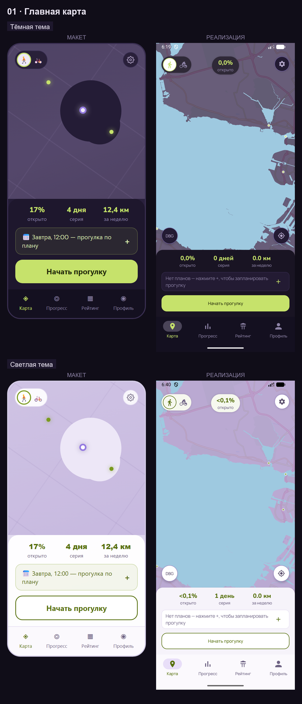
02 · Прогулка (запись)
ЧастичноЧип «Идёт запись» и панель «Пауза/Завершить» совпали. Расхождения: третья метрика «клеток открыто» вместо «+0,4% открыто»; «+ Задание» — FAB «+» вместо пилюли; завершение — диалог вместо удержания из макета.
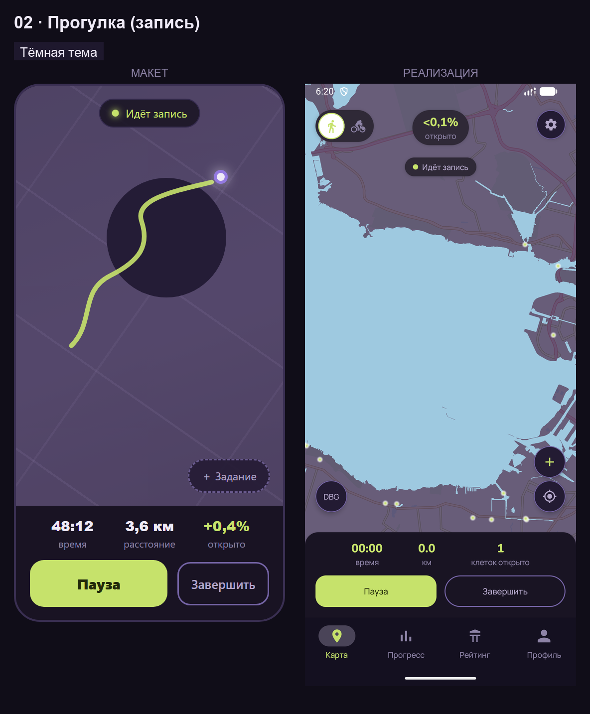
02п · Прогулка (пауза)
СовпадаетСостояние паузы снято, а не «ближайшее доступное»: чип «На паузе», кнопка «Продолжить». Удержание «Завершить» из макета в реализации отсутствует (диалог подтверждения).
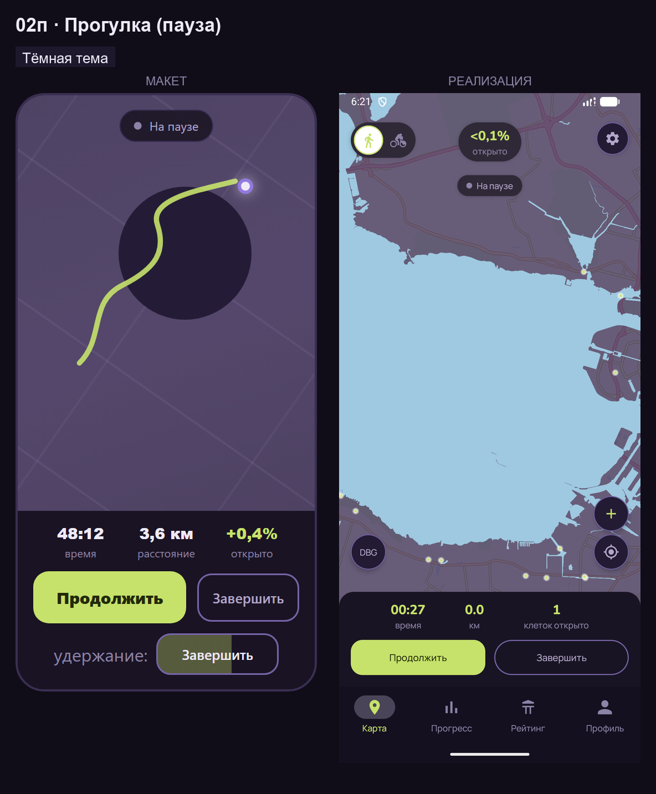
03 · Финал прогулки
РасходитсяМакет: hero-процент, сетка из 3 карточек (км/время/серия), карточка нового достижения, «Поделиться результатом»/«На карту». Реализация: текст похвалы, процент, строка «0.0 км · 0 мин», трофейная строка, «Поделиться»/«Закрыть» — общая структура иная.
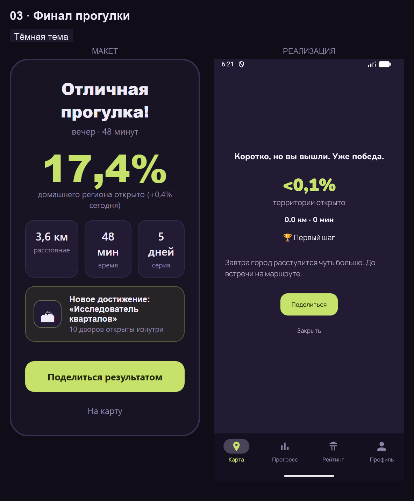
04 · Онбординг
РасходитсяМакет: 4 шага (приветствие с иллюстрацией и точками, выбор домашнего региона на мини-карте, цель со степпером, экран геолокации). Реализация: 3 текстовых шага без иллюстраций и точек + экран цели + «Пропустить». Выбора региона и экрана геолокации нет.
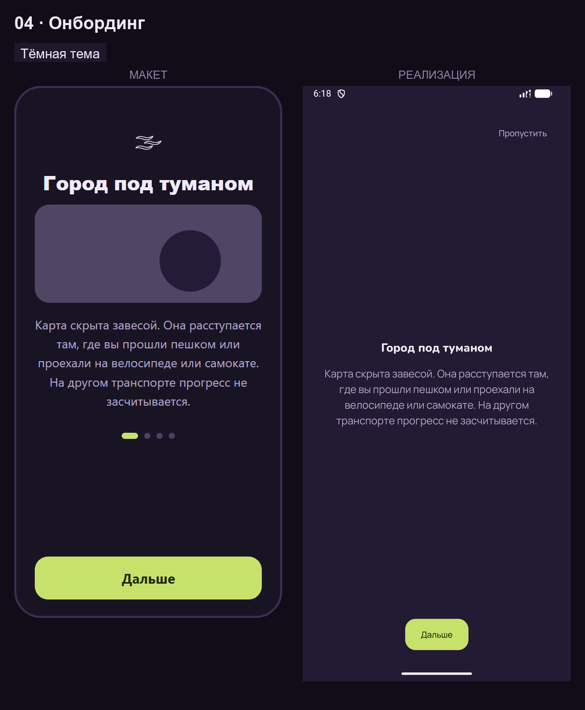
05 · Прогресс · Статистика
ЧастичноСегмент-пилюли совпали. Макет: hero «17,4%» + сетка 6 карточек + список средних. Реализация: строки «Цель/Серия/Прогулок/Расстояние» + «Планы → Запланировать». Hero-процента и сетки нет.
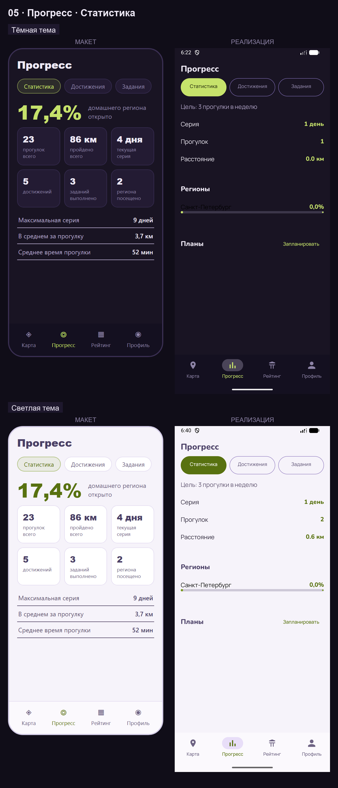
06 · Прогресс · Достижения
ЧастичноМакет: секции «Полученные / Неполученные», заблокированные — пунктиром с прогресс-баром. Реализация: одна секция «Исследование», плоские строки с эмодзи; разделения полученные/нет нет.
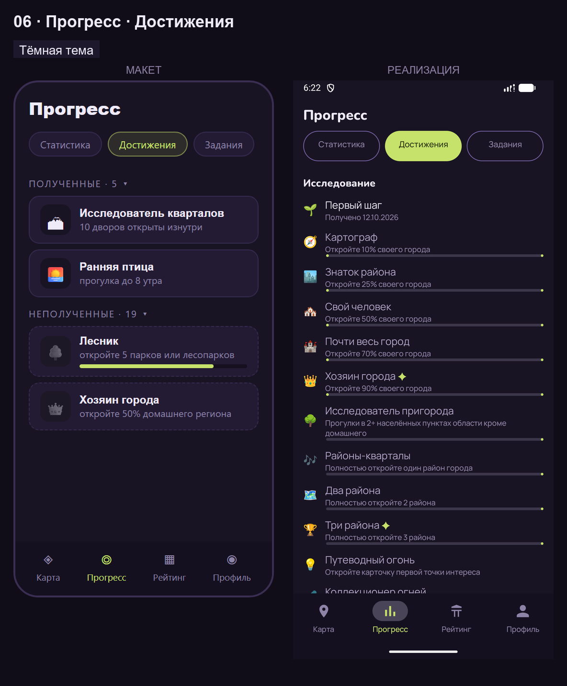
07 · Прогресс · Задания
Частично (пустое состояние)Снято корректное пустое состояние: «Вытянуть карту»/«Выбрать из 6», «Пока нет выполненных заданий». Макет показывает активное задание; копия кнопки «Случайное задание» → «Вытянуть карту».
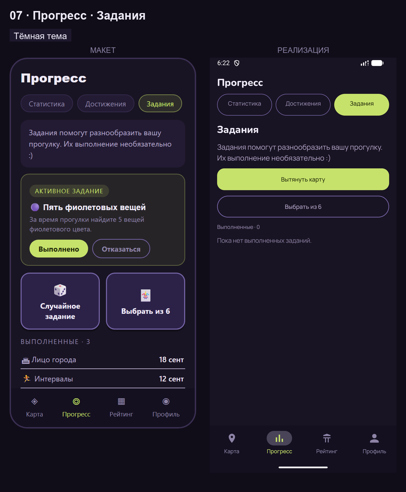
08 · Рейтинг
Расходится + баг темыСнято состояние «первый вход» (состояние «с ником» недостижимо на эмуляторе — сервер рейтинга недоступен, «Не удалось сохранить ник»). Реализация: поле «Ник» + «Вступить в рейтинг»/«Остаться невидимым»; список пуст; сегментов «Город/Друзья» нет. Баг: в тёмной системной теме фон вкладки остаётся светлым.
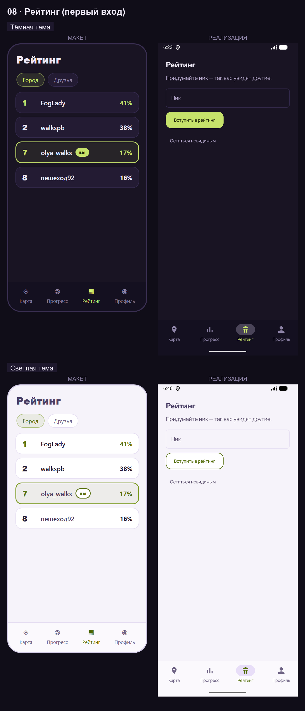
09 · Профиль
ЧастичноНабор близок, но компоновка иная: крупные карточки вместо групп строк с пилюлями, «Ник не задан» вместо аватара, нет «Обратной связи» и переключателя участия в рейтинге; добавлены предупреждение о локальности данных и «Экспорт»/«Импорт».
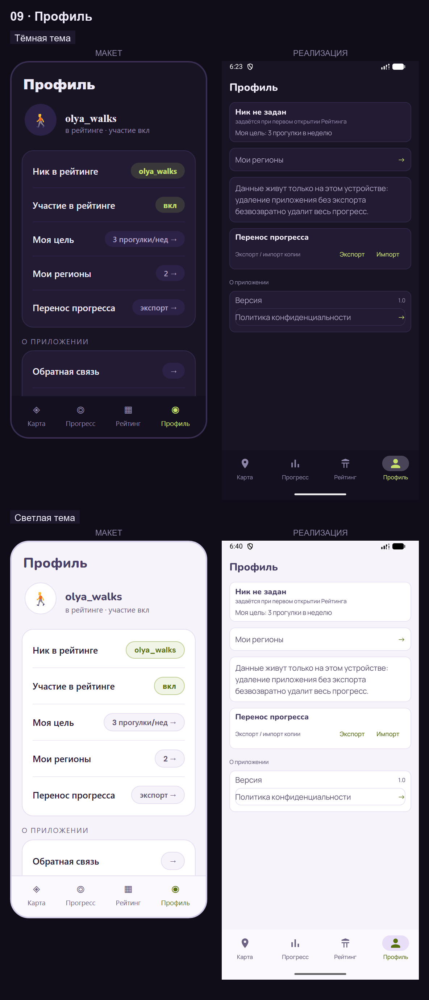
10 · Мои регионы
ЧастичноСтрока региона с процентом и подписью «домашний регион» совпали. На чистой установке список из одного домашнего региона (в макете — 3 региона). Под оверлеем видна нижняя навигация, в макете её нет.
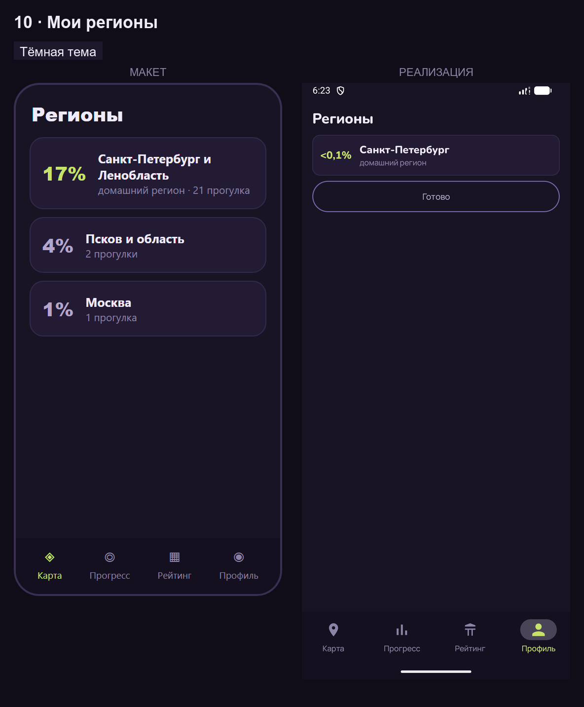
11 · Настройки
ЧастичноМакет: группы «Цель / Прогулки / Уведомления / Внешний вид» со значениями-пилюлями, включая «Тема: системная». Реализация: только «ПРОГУЛКА» (режим по умолчанию, автопауза, напоминание о забытой прогулке, кнопка «Задания»). Настроек цели, уведомлений и выбора темы нет.
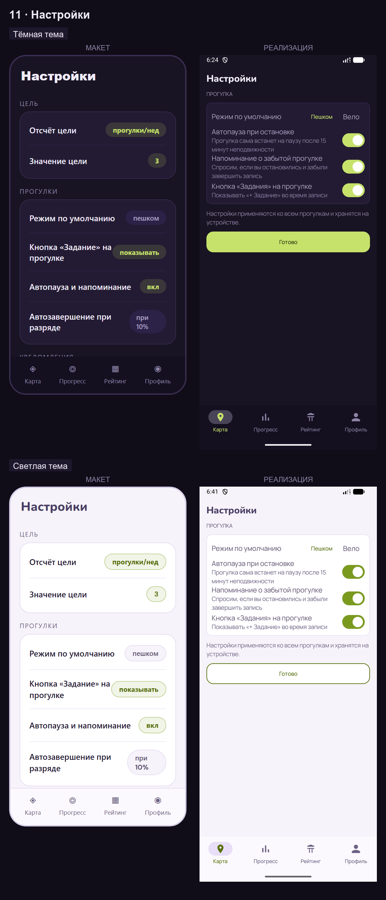
12 · Карточка POI
В целом совпадаетКарточка с реальным фото из пакета открывается тапом по маркеру (сквер Василия Ракова). Расхождения: в макете карточка прибита к низу над навигацией и имеет полосу из 3 фото; в реализации — одно фото, карточка выше домашней панели, кнопка «Закрыть».
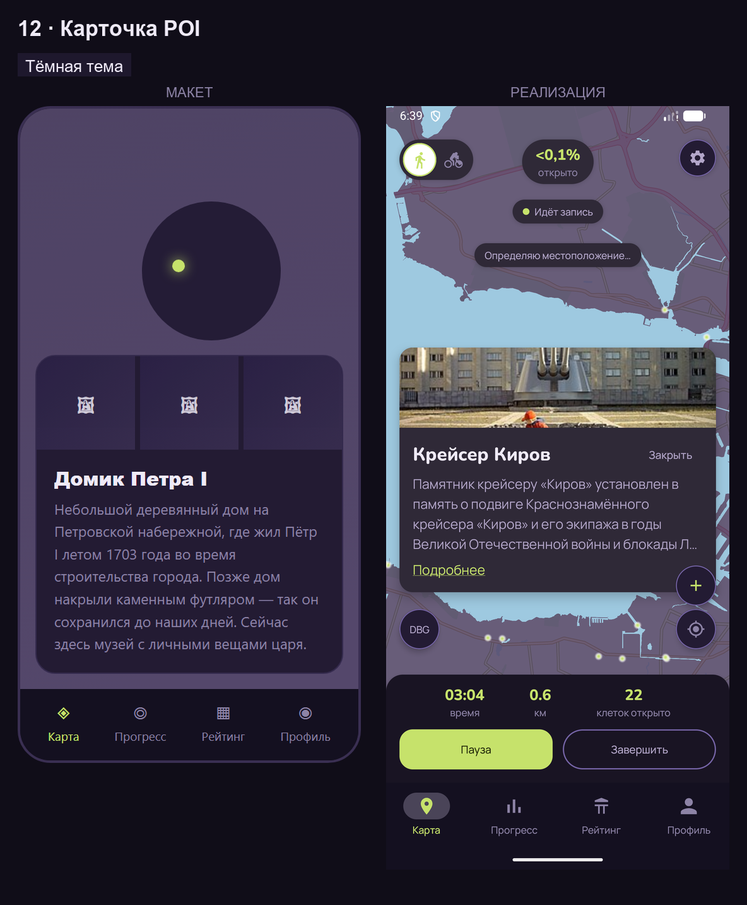
Сводная таблица
| Экран | Вердикт | Главное расхождение |
|---|---|---|
| 01 | совпадает | Лишние плашка «% открыто» в шапке, FAB «К моей точке», DBG |
| 02 | частично | Метрика «клеток открыто», FAB вместо пилюли «+ Задание», диалог вместо удержания |
| 02п | совпадает | Удержание «Завершить» не реализовано |
| 03 | расходится | Нет hero-процента, сетки 3 карточек, карточки достижения |
| 04 | расходится | 3 текстовых шага вместо 4 (нет выбора региона и экрана геолокации, иллюстраций, точек) |
| 05 | частично | Нет hero «17,4%» и сетки 6 карточек — строки + «Планы» |
| 06 | частично | Нет секций «Полученные/Неполученные», пунктира заблокированных |
| 07 | частично | Снято пустое состояние; «Случайное задание» → «Вытянуть карту» |
| 08 | расходится | Нет сегментов «Город/Друзья» и списка; баг: светлый фон в тёмной теме |
| 09 | частично | Карточки вместо групп с пилюлями; нет «Обратной связи», переключателя участия |
| 10 | частично | Один домашний регион на чистой установке; навигация под оверлеем |
| 11 | частично | Нет групп «Цель», «Уведомления», «Внешний вид (тема)» |
| 12 | совпадает | Одно фото вместо полосы из 3; карточка выше панели, есть «Закрыть» |
Что осталось (по убыванию заметности)
1. Баг: вкладка «Рейтинг» светлая в тёмной системной теме.
2. Финал прогулки — привести к макету (hero-процент, сетка 3 карточек, карточка достижения, «На карту»).
3. Онбординг — догнать макет (иллюстрации+точки, шаг региона, экран геолокации) или переутвердить макет.
4. Статистика — hero-процент и сетка карточек.
5. Рейтинг — сегменты «Город/Друзья», строки списка; «с ником» проверить на устройстве с сервером.
6. Настройки — группы «Цель», «Уведомления», «Внешний вид (тема)».
7. Мелочи 01/02: дубль «% открыто» в шапке, пилюля «+ Задание», метрика «% открыто» на прогулке.
8. Достижения — секции «Полученные/Неполученные», пунктир заблокированных.